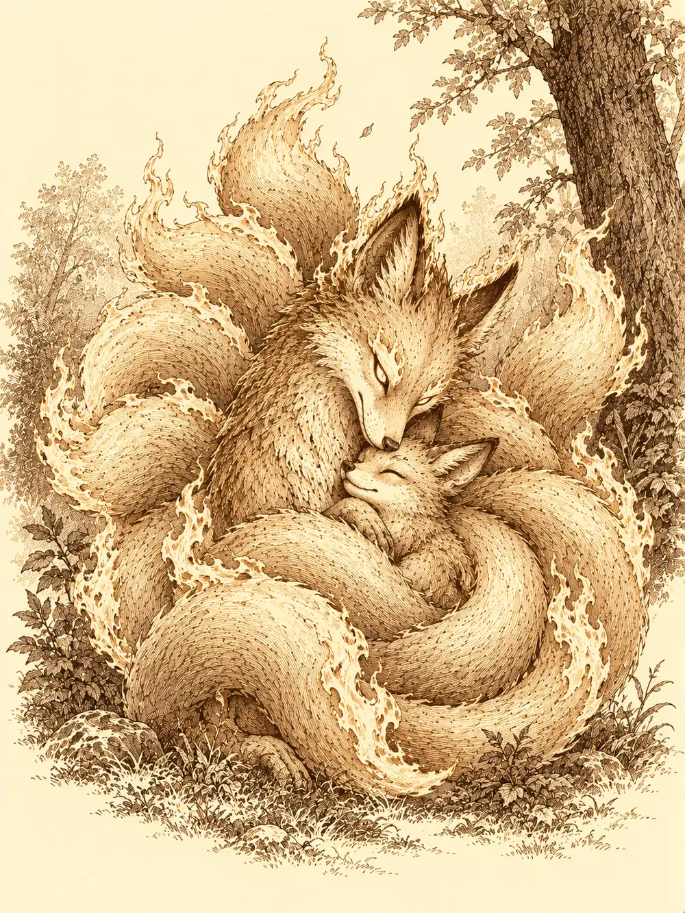

Capítulo 39
Acampar en el camino
Libro III · La boda del shogun
"Mírame a mí y haz exactamente lo mismo".
El inugami se encogió. Una luz azul lo envolvió, sus contornos se ablandaron como cera junto al fuego y, en el lugar del guerrero del kimono y las dos espadas, quedó un perro corriente que movía el rabo.
Maroxi cerró los ojos. Llevaba semanas intentándolo cada noche y siempre se quedaba a medio camino, con los huesos demasiado largos y la piel demasiado humana. Esta vez sintió que algo cedía. Se le acortaron las piernas, se le estiró la cara, el suelo se le acercó de golpe, y cuando volvió a abrir los ojos el mundo olía a cien cosas distintas y el inugami lo miraba desde su misma altura.
El yokai volvió a su forma y se rio.
"¿Ves, muchacho? No era tan difícil".
Maroxi también volvió. Le costaba sostener aquella forma, pero podía. Durante una hora sería un perro con su propia cabeza dentro: entendería lo que le dijeran, aunque no podría hablar, y si intentaba conjurar algo el cuerpo prestado se le desharía. Se inclinó ante el inugami en una reverencia profunda.
"Eres un gran maestro".
En la base había otros asuntos en marcha. Desde que Stolos había anunciado el ejército de Otakemaru, Erk quería que Koi aprendiera a pelear. Sun había vuelto de una montaña cercana a su templo, a la que había trepado convencido de que, si subía lo bastante alto, podría agarrar una nube como el Rey Mono de su libro. No agarró ninguna. En la cumbre vivía un anciano herrero que lo escuchó con mucha paciencia y le recomendó que bajara. Maroxi le había llevado a Asami las patas y los colmillos de la araña. Ikari se dedicaba a hacer favores por el pueblo, a traer suministros de la ciudad para unos y llenarle a otros los barriles de sake, y nadie terminaba de saber qué buscaba.
Hayate apareció aquella tarde por la base, cosa rara en los últimos tiempos. Erk se le acercó despacio.
"¿Puedo hacerte unas preguntas?".
El arquero la miró un buen rato antes de contestar.
"Te he estado observando. Había cosas que no te contaba porque no sabía si podía fiarme. Ahora sí".
Había nacido en Kuroto, le confirmó. Su gente vivía en el norte, en los Montes Dorados, al este de la ciudad arruinada de Yoki, en la ladera que da al mar. Era un lugar casi inaccesible a pie, al que se llegaba volando, a medio día de vuelo desde los bosques del este de las montañas. Lo llamaban la Ciudad Cóndor y no aparecía en ningún mapa. Allí vivían aves de muchas clases, y también otras menos inteligentes a las que protegían.
"¿Has oído hablar de un huevo robado?".
"Me fui muy joven. Pero había una anciana que sabía todas las historias, y creo recordar que contaba algo de un huevo robado". Negó con la cabeza cuando ella le preguntó por algún nido en el sur. "Puede que antiguamente hubiera asentamientos en otros sitios. No lo sé. En mi ciudad lo sabrán".
Erk le dio las gracias. Él le devolvió una reverencia.
Sirth los llamó a la mesa con un grito que sonó en toda la casa.
"¡Cazadores, reuníos!".
Puso encima dos frascos, uno junto al otro.
"Esta es la sangre de las ruedas, la que Asami usó para su máquina. Y esto es lo que salía del dragón y de la araña. No son lo mismo". Les contó a Sun y a Ikari, que no habían estado en la cueva, lo que había pasado con Stolos, el líquido y la cuchilla junto a su cuello. "Según él, con esto puede controlar a cualquier criatura. Y es aliado de Otakemaru".
Necesitaban saber más. De Otakemaru, del sur, de los soldados muertos que volvían a andar. Para eso hacían falta archivos, historiadores y el favor del shogun, y nada de eso estaba en Ukio.
"He pensado que nos traslademos a Sho una temporada. Ya he hablado con una taberna; nos harán buen precio. Hayate me ayudará a preparar el carro y os seguiremos cuando terminemos de recoger. Vosotros id despidiéndoos".
No podían dejar al bebé, a Shizuka y a los yokai de la base sin nadie. Sirth habló con Kitaro, con la dueña del burdel y con algunos vecinos para que se ocuparan de ellos mientras estuvieran fuera.
El inugami le dio a Maroxi una noticia que lo hizo salir corriendo: la kitsune estaba mejor, tan bien que las cuidadoras del templo la habían sacado al bosque cercano para ver cómo se desenvolvía.
La encontraron en un claro, a poca distancia del pueblo, con dos muchachas vigilándola desde lejos. Caminaba ya sin cojear, despacio, probando las patas. Tenía varias colas y en la piel le asomaban de vez en cuando lenguas de fuego, y sus ojos eran dos llamas de su mismo color. Cuando Maroxi se acercó, ella se apartó de un salto, como un gato, y se quedó mirándolo a distancia.
"Mi querida Firefox", le dijo él. "Estás viva".
Se arrodilló y le tendió en la palma unas tiras de carne de sus raciones. La kitsune se acercó con los ojos clavados en él, olió, lamió la carne, la tomó con los dientes y retrocedió para comérsela sin dejar de vigilarlo. Maroxi se transformó entonces en perro y se puso a dar saltos alrededor, moviendo el rabo, invitándola a jugar. Ella lo miró como miran los gatos a los perros cuando hacen de perros.
Erk llegó volando con Koi en brazos.
El cachorro abrió mucho los ojos. La madre dejó la comida y echó a correr. Se encontraron en mitad del claro, y la kitsune envolvió a su hijo con todas sus colas a la vez, como en un abrazo de fuego que no quemaba.
Erk les habló en la lengua del bosque. Les contó que había cuidado de Koi mientras ella estaba enferma.
"Sí, mamá", dijo el pequeño con una voz muy fina. "Es verdad".
La madre la miró y le dio las gracias. Maroxi, que había vuelto a su forma, le pidió a Erk que le dijera que se había salvado porque él la había llevado al templo, que estaba muy contento de verla bien.
"Os lo agradezco", contestó la kitsune. "Pero decidle a vuestro compañero que tenga cuidado. No quiero quemarlo sin querer".
Maroxi hizo aparecer en la palma una pequeña bola de fuego para demostrar que el fuego no le asustaba. Koi saltó de entre las colas de su madre, se la comió de un bocado y le sonrió.
Erk le ofreció un lugar en la base. Le prometió prepararle una zona segura, cuidar de los dos, dar la vida por ellos si hacía falta. La kitsune se acercó y le acarició la cara con una de las colas.
"Veo que vuestras intenciones son buenas, muchacha. Pero no podemos quedarnos aquí. Podríamos causar un incendio. Tendremos que marcharnos".

Echó a andar hacia el bosque. Koi se quedó quieto mirándola, dio un paso hacia Erk, se volvió otra vez hacia su madre, y al final la siguió. Antes de desaparecer entre los arbustos asomó la cabeza con las orejas gachas y levantó una pata, como diciendo adiós.
Sun entró en la taberna arrastrando los pies y fue a sentarse junto a Lealín.
"Tengo que irme una temporada".
"¿Pero vas a volver?".
"Eso espero. Quería preguntarte si, cuando vuelva, querrías tener una cita conmigo".
Lealín miró a Mufasa, el mago leonino, que leía a su lado.
"¿Qué ha dicho?".
"No lo sé, no le estaba haciendo caso".
"Una cita", repitió Sun.
"Ah. Sí, claro. ¿Por qué no?".
Ikari recorrió las tiendas para preguntar qué necesitaban de la capital. El alquimista y el herrero le dieron sendas listas, unas con cosas corrientes y otras con materiales que no había oído nombrar en su vida.
La dueña del burdel recibió a Maroxi con un cigarro largo en los labios. Cuando él le contó que se iban, quizá dos meses, quizá más, ella le preguntó qué iban a hacer con todos aquellos bichos, el bebé y la niña loca. Él le pidió que los cuidara. La mujer se subió a la mesa y le tendió la mano.
"Hacemos un trato. Yo te cuido a los bichos, al bebé y a la niña, y a tu vuelta tenemos una cena romántica".
"Siempre que hayas cuidado de todo como es debido".
"Prometido".
Maroxi le estrechó la mano y después la estrechó a ella entre sus brazos, y la dueña del burdel se quedó un instante sin saber qué cara poner.
Haru les confirmó que la puerta nueva se la había puesto Guxi, la que Sun no llegó a traerle, y repartió veinticinco monedas de la pesca.
Asami tenía algo que enseñarles: un potingue verde en un tarro. Metió una varilla de madera y la varilla se deshizo. Metió otra de metal y salió retorcida, deformada como si la hubieran ablandado al fuego.
"Lo he hecho con las patas de araña y los colmillos que me disteis. Ya se me ocurren unas cuantas trampas".
Sobre el líquido negro de Stolos no había podido averiguar nada. Necesitarían a alguien que supiera más.
En la cocina de Kitaro había dos estanterías llenas de barriles. El tabernero mandó a Shiro bajar uno y lo destapó: dentro había un potaje espeso, hecho con la carne de la serpiente que le habían traído de Sho.
"Comida para cinco meses. Nunca imaginé que daría para tanto".
Les preparó raciones para el viaje y para la gente de la base. Los shinobi de la casa les hicieron llegar herramientas de alquimista y una mochila enorme, de esas que se cargan como si no pesaran. Luego subieron al carro del shogun, enganchado a sus caballos, y tomaron el camino de Sho.
Viajaban sin prisa. Erk volaba casi todo el día, porque el carro la aburría, y bajaba de vez en cuando con alguna presa. Sun le enseñaba a Maroxi su libro y le preguntaba si un mago conocía alguna forma de agarrar una nube. Maroxi le hablaba de hechizos para levitar, para caer despacio, de pociones que hacían volar, pero de nubes no sabía nada. Le enseñó, a cambio, las colas que ya era capaz de hacerse crecer. Ikari hacía las guardias con su botella de sake, y en algún momento de la noche las guardias empezaron a dar vueltas.
Erk dormía cuando algo le rozó la espalda.
Lanzó un aletazo sin pensar y sus plumas golpearon algo que estaba detrás. Se incorporó de un salto. Maroxi dormía a un lado, Sun al otro, Ikari dormitaba apoyado contra un árbol. No había nadie más. Solo, entre la maleza, unas hojas que se movían como si algo invisible acabara de pasar por allí.
Despertó a los demás. Al revisar sus bolsas se dieron cuenta: a cada uno le faltaban doscientas monedas.
Erk encontró ramas rotas en la dirección en que se habían movido las hojas y siguió el rastro de noche, con una antorcha, hasta la boca de una cueva. Dentro estaba oscuro. Ikari, que veía en la oscuridad, se adelantó en silencio. Había un pozo en el centro, y al fondo, cofres y monedas de oro esparcidas por el suelo.
Maroxi se acordó de la joya de Tanaka y de las criaturas de garras que acumulaban tesoros. Se acercó a examinar un cofre. En la tapa se abrió un ojo. Luego una boca con dientes, y una lengua larga y pegajosa salió disparada hacia él.
No era el único. Más cofres se abrían, y entre ellos las monedas del suelo se ponían a saltar y a morder los tobillos. En medio de todo aparecieron dos figuras de brazos larguísimos, cubiertas de pelo, que se volvían invisibles y reaparecían junto a sus víctimas. Eran dodomeki. Con cada golpe que daban arrancaban monedas de las bolsas de los cazadores y se las tragaban, y el oro que comían los volvía más duros.
Sun se llevó la peor parte. Lo golpearon y le robaron una y otra vez, y él respondía con todo lo que tenía, puños, bastón y rabia. Los demás acudieron a ayudarlo. Maroxi quemó monedas con fuego y peleó con sus dos espadas. Ikari lanzó una podredumbre doble que alcanzó a dos enemigos a la vez, soltó a su perro de sombra y aceleró a sus compañeros. Erk remató cofres y acabó con una de las dodomeki. Maroxi intentó convencer a la otra, con la voz suave de la magia, de que se rindiera. No funcionó, y Erk la mató también.
Las doscientas monedas de cada uno se habían quedado dentro de aquellos cuerpos.
Maroxi se arrodilló junto a la última dodomeki muerta, con el pelo todavía humeando, y le vertió encima el frasco de líquido negro. La sustancia se movió sola por el cuerpo, buscó las heridas y se coló dentro. Durante un momento no pasó nada. Luego el cadáver empezó a convulsionar, a sacudir los brazos, a chillar aunque estaba muerto. A los treinta latidos reventó y salpicó de sangre las paredes de la cueva.
Se quedaron un rato en silencio.
Los demás cofres tenían en la tapa la misma línea fina del ojo. De las monedas del suelo, algunas se movían y otras no, y nadie quiso averiguar cuáles eran de verdad. Maroxi, en cambio, quería estudiar uno de aquellos mímicos vivo. Se subió encima de uno, le dio vueltas con los cincuenta pies de cuerda que llevaba, hasta el último palmo, y consiguió cerrarlo. El cofre seguía intentando abrir la boca y escaparse.
"Sun, ayúdame a llevarlo al carro".
Erk cortó dos lenguas de los mímicos muertos. Ikari se llevó el brazo de una dodomeki, con su garra. Salieron de la cueva con el sol ya alto, Maroxi y Sun empujando el cofre atado, Erk con las dos lenguas arrastrando por el suelo desde el hombro, Ikari con su botella en una mano y el brazo peludo en la otra. Recogieron el campamento, subieron al carro y siguieron hacia Sho, más pobres que la víspera y con un pasajero que de vez en cuando hacía crujir la cuerda.